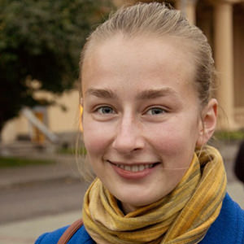

Экскурсии по Минску и Минской области

Дарья Мирон
Гид по Минску и Минской области
+375 (29) 853-00-99
ы
Главная
Экскурсии
Минск-столица Республики Беларусь
Дудутки
Наследие ЮНЕСКО (Мир/Несвиж)
Xатынь-Курган славы
Линия Сталина
Рус
Eng
Каталог экскурсий
Минск-столица Республики Беларусь
Путешествие в Дудутки
Хатынь-Курган славы
Дорогой к «Линии Сталина»
Наследие ЮНЕСКО